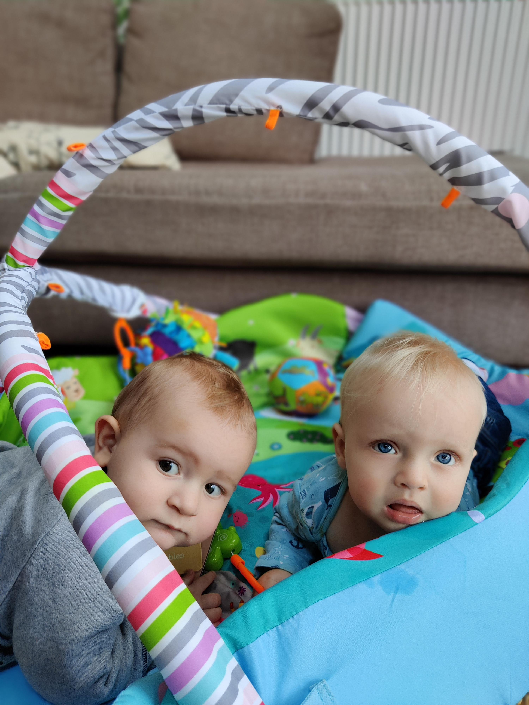

This is my final post before finishing SPL and Joel starting at nursery. I don’t think I’ll continue this blog anymore, but I will try to record progress of Joel (and Kirsten) as they grow older elsewhere so I can share it with them when they are grown up.
I’ll try and summarise Joel’s personality today here as I think it will be interesting to see whether he is the same when looking back at this in years to come.
Speaking with Mum yesterday, when I was saying that I was sad that this period is coming to an end, I realised how ready Joel is for what is coming now. He is a very curious and independent little boy. He asks for very little and is very happy exploring on his own. I spend a lot of time sitting in the same room as him, surrounded by his toys, and just watching him crawl from toy to toy, picking each one up and understanding it in as many ways as possible (touch, taste, banging, throwing). At nursery he will be in a new environment where he’ll have a lot more to explore and I think once he is used to those surroundings he will flourish.
He also loves Kirsten enormously. Whether it is because she is Kirsten, or because she is an older child, or both, I don’t know. He will be one of the youngest in his class at nursery though, so being surrounded by children that are close to his age, but slightly older will probably have some sort of positive impact on him.
One thing I feel I’ve not been great at with him is verbal communication. I rely a lot on body language and less so on verbal communication. He will have a lot more of the latter at nursery. He’s just started to babble a lot, making lots of “mamamama” noises (and little squeaks), so this is probably an ideal time to be surrounded by outgoing, smiley, friendly, warm, talkative nursery staff.
He loves eating, and we feed him pretty much whatever we are eating, which he normally devours. Nursery will continue to encourage his good eating habits (they have a lovely menu that is very healthy), and they will continue to encourage him to feed himself.
I’ve mentioned in a previous post that he has had limited social opportunities. Most socialising has been done as part of the weekly groups I’ve attended, but they generally haven’t been that useful for interacting directly with other children his age. Actually, last week he had his first real opportunity to play with another child - Rory, who is Lucy’s son and is 3 months younger than Joel. It was lovely watching them together. They were very curious to understand more about each other, both really trying to grab each other’s ears and eyes. This will be one of the biggest benefits from going to nursery for Joel as he’ll get to play with children his age all the time. I think he’ll love this (though there will obviously be knocks and bruises along the way).

Thank you for a wonderful 4 months Joel. It’s been very memorable for me - probably less so for you! I’ve loved it, and I’m sure when you’re older I’ll tell you all about it (or at least, point you in the direction of this blog). Enjoy nursery and good luck with the next chapter.